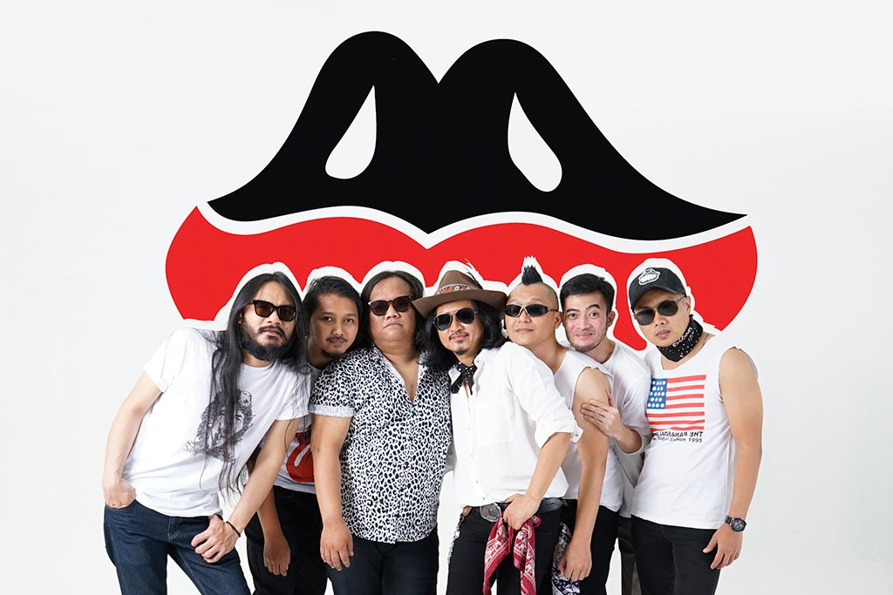

Vokalis
Erwin Koboi, vokalis dan pemain Harmonika The Panasdalam Bank mengatakan, EP “Yes I Am” memunculkan cita rasa lain dalam musiknya.
Gitaris & vokalis
Para personel The Panasdalam Bank antara lain Erwin Koboi (vokal, harmonika), Alga (vokal), Boiq (gitar elektrik), Nawa (gitar akustik), Nandang (bas), Roy (drum), dan Eeng (perkusi).
Biografi
The PanasDalam adalah sebuah grup musik yang berasal dari Bandung, Indonesia. Mereka adalah Front Pembela Islam Kristen Hindu Buddha yang diprakarsai oleh:
Sebuah Negara yang memproklamirkan kemerdekaannya pada tanggal 18 agustus 1995 di sebuah studio seni lukis, lantai dua Fakultas Seni Rupa dan Desain – Institut Teknologi Bandung (FSRD – ITB). Negara ini dipimpin oleh imam beser mereka, seorang haji yang pada waktu itu mungkin masih menyembah api dan semut tetapi sekarang tidak. Pimpinan mereka adalah haji mabrur yang sampai sekarang masih membaca kitab Wedha, Thaurat, Injil, dan buku–buku lain, serta tentunya kitab suci Al-Qur’an
Haji mabrur itu bernama Pidi Baiq. Belakangan ada kabar bahwa gelar Haji yang melekat pada nama beliau tidak lain adalah nama marga. Dialah yang pada waktu itu berdiri diatas meja persegi empat dan membacakan teks proklamasi. Negara yang memang segitulah luas wilayahnya, tetapi penuh dengan ruh sukacita didalamnya. Negara yang bila susah maka semua susah, negara yang bila senang, semua sama merasakannya. Negara ini memang satu-satunya di dunia. Kepala negaranya hafal semua nama penduduknya.
Negara Kesatuan Republik The Panasdalam yang mengaku ingin berak sejak 1995. Namun pada tahun 1999 Republik The Panasdalam bergabung lagi ke Negara Indonesia dan mengubah namanya menjadi Daerah Istimewa The Panasdalam. Perubahan yang terakhir terjadi pada tahun 2007, namun ternyata berubah lagi menjadi The Panasdalam Kingdom, “Kingdom of have fun”, hingga sekarang.

The Panasdalam Bank adalah sebuah band asal Bandung yang unik dan penuh dengan kejutan. Digawangi oleh Imam Besar Pidi Baiq, yang dikenal lewat franchise Dilan, Erwin Koboi (vokal - Harmonika), Alga (vocal), Boiq (gitar elektrik), Nawa (gitar akustik), Nandang (gitar Bass), Roy (drum), dan Eeng (perkusi).
Awalnya, grup musik ini terbentuk oleh Fathia Izzati, Era Patigo dan Mayo Falmonti pada 2016. Namun kemudian, Fathia mengajak kakaknya, Faiz Novascotia Saripudin dan Iqbal Anggakusumah untuk bergabung. Namun sayang, Mayo memutuskan untuk keluar setelah enam bulan terbentuk karena kesibukan pribadi dan digantikan Nugi Wicaksono.Melansir Kompas.com , band ini dikenal sebagai bintang kampus saat itu. Artikel ini telah tayang di Sripoku.com dengan judul The Panasdalam Bank, Band Indi Asal Bandung, Beranggotakan Pidi Baiq Penulis Novel Dilan.
Sejarah The Panas Dalam
THE PANASDALAM adalah akronim dari: THE-nya dari aTHEis, PA-nya dari PAganisme, NAS-nya dari NASrani, DA-nya dari Hindu budDA, LAM-nya dari isLAM Didirikan tanggal 18 Agustus tahun 1995, di salah satu ruangan kuliah yang ada di kampus ITB (Institut Teknologi Bandung), jalan Ganesha 10 Bandung. Didirikan sebagai sebuah negara dengan nama: NKRTPD, singkatan dari Negara Kesatuan Republik The Panasdalam. Menjadi sebuah negara merdeka yang memisahkan diri dari Negara Kesatuan Republik Indonesia sebagai bentuk lampias dari rasa kecewa kepada presiden Indonesia (Bapak Suharto), yang waktu itu dianggap sudah harus meletakan jabatannya. NKRTPD adalah negara kecil, berukuran 8X10 meter. Penduduknya merasa kaya raya karena kalau makan atau minum pada pergi ke luar negeri, yaitu di Indonesia, demikian juga kalau ee atau pipis. Orangtua dan pacar, semuanya pada tinggal di luar negeri.
Album The Panas Dalam
(The Panas Dalam)
Daftar lagu dari album ini:
- SUDAH JANGAN KE JATINANGOR
- Cita-Citaku (2003)
- Tenang Saja
- Dan Bandung
- semacam Kasih sayang
- IBU IBU IBU
- Jangan Sombong
- Teman Teman Jangan sekolah
- Koboy Kampus
- LIBRANI OUTCHE ENVIRIE
- Risau NKRI
- salam Mantan
- Kucing Adalah Anjingku
- Kita Harus Bilang Apa Dalam Doa
- wanita
- Bunyi Sunyi
- Setiap Yang Bernama
- Mulai Bernyanyi
- Aku Tenang
The Panasdalam Bank dan Danilla, seniman berbakat di Indonesia, kembali menghadirkan karya cipta mereka berjudul "Dan Bandung." Dalam lagu ini, mereka menggambarkan perasaan yang mendalam terhadap Kota Bandung, bukan hanya sebagai lokasi geografis, melainkan sebagai tempat di mana perasaan batin .
CLICK HERE

"Sesuai dengan judulnya, lagu ini menceritakan segala atmosfer Kota Bandung yang menjadi latar film Dilan 1991," tulis Warner Music Indonesia selaku label rekaman yang merilis album soundtrack Dilan 1991